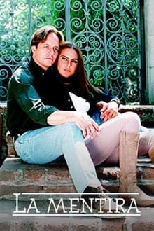

Este remake da novela clássica de 1994 conta história de amor entre a trabalhadora rural Gaviota e Sebastián, um herdeiro da aristocracia cafeeira.
Todos os anos, Gaviota (Laura Londoño) e sua mãe chegam à Fazenda Casablanca para pegar o café da segunda safra do ano, mas esperam que a próxima visita seja a última, pois a partir de agora serão donas de suas próprias terras. No entanto, o destino tem outros planos. Octavio Vallejo, proprietário da fazenda, acaba de falecer. Gaviota já o havia salvado de um sequestro. Octavio prometeu como recompensa dar-lhe um hectare de terra para que ela pudesse plantar seu próprio café. Tentando fazer com que a família Vallejo honre o acordo, Gaviota conhece Sebastián (William Levy), filho de Octavio, e uma atração irreprimível nasce entre eles, um amor doloroso e impossível, tornando-se dois amantes que pertencem a mundos diferentes.